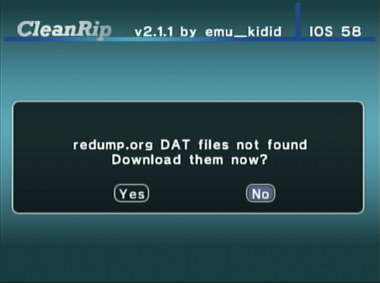

Extragerea jocurilor Wii/GameCube
Pentru suport în Engleză, cereți ajutor la RiiConnect24 pe Discord.
Vrei să extragi un disc Wii sau GameCube? Există două metode de a face asta, în funcție de instrumentele pe care le ai la dispoziție.
Ghid Cleanrip
De ce ai nevoie
- Un card SD sau o unitate USB cu cel puțin 4.7 GB de spațiu liber (8.5 GB dacă extragi un disc cu dublu straturi).
- CleanRip
Instrucțiuni
Secțiunea I - Descărcare/Instalare
- Extrage CleanRip și pune-l în dosarul
appsdin cardul tău SD sau unitatea ta USB. - Introduce cardul tău SD în Wii, și pornește CleanRip din Homebrew Channel.
Secțiunea II - Extragere
- Selectează-ți dispozitivul unde îți vei extrage jocul - cardul SD sau unitatea USB.

- Pe acest ecran, te întreabă dacă vrei să descarci un fișier cu sumele de control ale jocului astfel încât poți să verifici dacă extragerea creată este o copie 1:1 a discului. Este alegerea ta dacă să spui
YessauNo(Da sau Nu) să descarci acest fișier.  - Acum introdu jocul pe care vrei să-l extragi.


- Setează-l așa cum este arătat în ecranul de mai jos.
title: “CleanRip”

- CleanRip acum îți va extrage jocul. Poate dura un timp îndelungat, pentru că va extrage toți cei 4.7 GB de conținut ai discului (8.5 GB pentru discuri cu două straturi).

Extragerea unui joc printr-o rețea locală
title: “Extragerea jocurilor Wii/GameCube printr-o rețea locală” —
De ce ai nevoie
- Un Wii.
- DVD Dump Tool
Consola Wii și calculatorul tău trebuie să fie conectate la o rețea locală
Instrucțiuni
Secțiunea I - Descărcare/Instalare
- Extrage DVD Dump Tool și pune-l în dosarul
appsdin cardul tău SD sau unitatea ta USB. - Introduce cardul tău SD în Wii, și pornește DVD Dump Tool din Homebrew Channel.
Secțiunea II - Extragere
- Apasă butonul din dreapta de pe +d-pad și apasă “A”

- Alege discul pe care vrei să-l copiezi (Opțiunile sunt:
Disc GameCube,Disc Wii Cu Un Singur Strat,Disc Wii Cu Două Straturiși apasă “A”
- Acum introdu jocul în Wii. (Dacă deja este în Wii, scoate-l și pune-l înapoi)


- Ține-ți minte URL-ul Wii (adresa IP)

- Pe calculator în browser-ul web, scrie URL-ul Wii și apasă ENTER.

- Ar trebui să vezi asta. Apasă pe
Click here to download XXXX.iso
- Viteza de transfer nu este cea mai rapidă, dar dacă nu poți folosi altceva, este mai bine decât nimic.